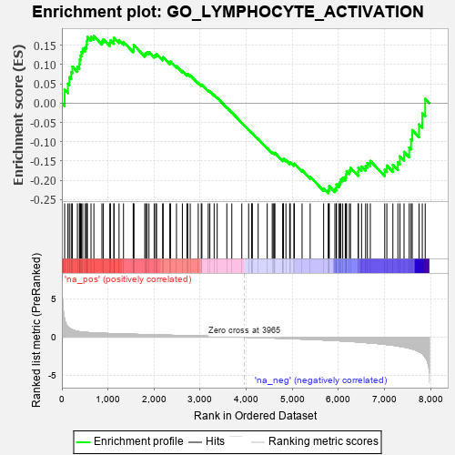
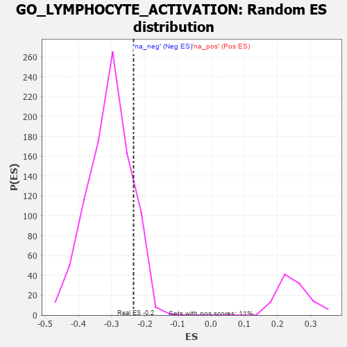

| | | Dataset | 7d |
| Phenotype | NoPhenotypeAvailable |
| Upregulated in class | na_neg |
| GeneSet | GO_LYMPHOCYTE_ACTIVATION |
| Enrichment Score (ES) | -0.23379505 |
| Normalized Enrichment Score (NES) | -0.76112825 |
| Nominal p-value | 0.8702461 |
| FDR q-value | 0.99925786 |
| FWER p-Value | 1.0 |
Table: GSEA Results Summary

Fig 1: Enrichment plot: GO_LYMPHOCYTE_ACTIVATION
Profile of the Running ES Score & Positions of GeneSet Members on the Rank Ordered List
| PROBE | GENE SYMBOL | GENE_TITLE | RANK IN GENE LIST | RANK METRIC SCORE | RUNNING ES | CORE ENRICHMENT | | 1 | RAC2 | | | 60 | 2.442 | 0.0350 | No |
| 2 | SP3 | | | 131 | 1.391 | 0.0504 | No |
| 3 | SPI1 | | | 162 | 1.182 | 0.0673 | No |
| 4 | BCL3 | | | 202 | 1.047 | 0.0806 | No |
| 5 | RHOH | | | 228 | 0.987 | 0.0946 | No |
| 6 | DLL1 | | | 337 | 0.760 | 0.0942 | No |
| 7 | SOX13 | | | 380 | 0.717 | 0.1014 | No |
| 8 | BAX | | | 387 | 0.711 | 0.1130 | No |
| 9 | NBN | | | 405 | 0.696 | 0.1230 | No |
| 10 | MLH1 | | | 423 | 0.679 | 0.1327 | No |
| 11 | ERCC1 | | | 453 | 0.660 | 0.1406 | No |
| 12 | THOC1 | | | 507 | 0.627 | 0.1448 | No |
| 13 | PKN1 | | | 535 | 0.619 | 0.1521 | No |
| 14 | SRF | | | 542 | 0.615 | 0.1621 | No |
| 15 | JMJD6 | | | 553 | 0.613 | 0.1715 | No |
| 16 | GLMN | | | 632 | 0.583 | 0.1718 | No |
| 17 | XRCC6 | | | 694 | 0.560 | 0.1738 | No |
| 18 | IGBP1 | | | 869 | 0.514 | 0.1607 | No |
| 19 | HDAC5 | | | 900 | 0.506 | 0.1657 | No |
| 20 | AKT1 | | | 1040 | 0.476 | 0.1563 | No |
| 21 | MEF2C | | | 1054 | 0.473 | 0.1630 | No |
| 22 | SRC | | | 1128 | 0.459 | 0.1617 | No |
| 23 | NCK2 | | | 1131 | 0.458 | 0.1694 | No |
| 24 | KAT7 | | | 1240 | 0.440 | 0.1634 | No |
| 25 | NKAP | | | 1337 | 0.422 | 0.1585 | No |
| 26 | SOS1 | | | 1547 | 0.384 | 0.1387 | No |
| 27 | DCAF1 | | | 1559 | 0.381 | 0.1439 | No |
| 28 | SOCS6 | | | 1560 | 0.381 | 0.1506 | No |
| 29 | FNIP1 | | | 1798 | 0.338 | 0.1263 | No |
| 30 | MSH2 | | | 1819 | 0.334 | 0.1296 | No |
| 31 | TCF7 | | | 1848 | 0.328 | 0.1318 | No |
| 32 | PAK3 | | | 1889 | 0.322 | 0.1323 | No |
| 33 | EXO1 | | | 2002 | 0.304 | 0.1234 | No |
| 34 | HMCES | | | 2036 | 0.300 | 0.1245 | No |
| 35 | IRF4 | | | 2054 | 0.298 | 0.1275 | No |
| 36 | SYK | | | 2186 | 0.278 | 0.1157 | No |
| 37 | ATAD5 | | | 2197 | 0.277 | 0.1193 | No |
| 38 | DOCK8 | | | 2341 | 0.254 | 0.1055 | No |
| 39 | MIF | | | 2357 | 0.252 | 0.1080 | No |
| 40 | ZC3H8 | | | 2486 | 0.229 | 0.0957 | No |
| 41 | VAV3 | | | 2614 | 0.210 | 0.0833 | No |
| 42 | PHB2 | | | 2712 | 0.197 | 0.0744 | No |
| 43 | RORA | | | 2730 | 0.193 | 0.0756 | No |
| 44 | NSD2 | | | 2784 | 0.185 | 0.0721 | No |
| 45 | BTK | | | 2958 | 0.156 | 0.0528 | No |
| 46 | WNT4 | | | 3023 | 0.146 | 0.0472 | No |
| 47 | LEF1 | | | 3037 | 0.144 | 0.0481 | No |
| 48 | AHR | | | 3175 | 0.126 | 0.0329 | No |
| 49 | AP1G1 | | | 3210 | 0.121 | 0.0307 | No |
| 50 | SMAD3 | | | 3303 | 0.105 | 0.0208 | No |
| 51 | SMAD7 | | | 3369 | 0.093 | 0.0142 | No |
| 52 | GPR18 | | | 3578 | 0.063 | -0.0112 | No |
| 53 | CD180 | | | 3686 | 0.046 | -0.0240 | No |
| 54 | JAG2 | | | 3903 | 0.010 | -0.0513 | No |
| 55 | ATG5 | | | 4051 | -0.016 | -0.0697 | No |
| 56 | MTOR | | | 4114 | -0.025 | -0.0772 | No |
| 57 | ABL1 | | | 4125 | -0.027 | -0.0780 | No |
| 58 | MSH6 | | | 4129 | -0.028 | -0.0779 | No |
| 59 | PCID2 | | | 4258 | -0.051 | -0.0932 | No |
| 60 | SYVN1 | | | 4454 | -0.085 | -0.1166 | No |
| 61 | BAG6 | | | 4563 | -0.108 | -0.1284 | No |
| 62 | SNX27 | | | 4585 | -0.115 | -0.1291 | No |
| 63 | GATA3 | | | 4614 | -0.120 | -0.1305 | No |
| 64 | DLG5 | | | 4619 | -0.121 | -0.1289 | No |
| 65 | CD151 | | | 4791 | -0.156 | -0.1479 | No |
| 66 | ITFG2 | | | 4796 | -0.156 | -0.1457 | No |
| 67 | PLCL2 | | | 4807 | -0.159 | -0.1442 | No |
| 68 | DLG1 | | | 4860 | -0.169 | -0.1479 | No |
| 69 | EP300 | | | 4941 | -0.186 | -0.1548 | No |
| 70 | PRKDC | | | 4955 | -0.189 | -0.1531 | No |
| 71 | PURA | | | 5032 | -0.205 | -0.1592 | No |
| 72 | PDPK1 | | | 5043 | -0.207 | -0.1569 | No |
| 73 | ATM | | | 5210 | -0.249 | -0.1736 | No |
| 74 | FZD5 | | | 5386 | -0.292 | -0.1908 | No |
| 75 | CASP8 | | | 5678 | -0.369 | -0.2213 | No |
| 76 | VAMP7 | | | 5777 | -0.399 | -0.2268 | Yes |
| 77 | LAMP1 | | | 5796 | -0.404 | -0.2221 | Yes |
| 78 | ADA | | | 5798 | -0.405 | -0.2151 | Yes |
| 79 | STK11 | | | 5922 | -0.443 | -0.2230 | Yes |
| 80 | CXCR5 | | | 5954 | -0.456 | -0.2190 | Yes |
| 81 | PRDM1 | | | 5956 | -0.457 | -0.2112 | Yes |
| 82 | XBP1 | | | 6011 | -0.475 | -0.2097 | Yes |
| 83 | RAC1 | | | 6036 | -0.484 | -0.2043 | Yes |
| 84 | FZD8 | | | 6051 | -0.490 | -0.1976 | Yes |
| 85 | FLOT2 | | | 6092 | -0.504 | -0.1938 | Yes |
| 86 | RNF8 | | | 6147 | -0.518 | -0.1916 | Yes |
| 87 | EGR1 | | | 6165 | -0.527 | -0.1846 | Yes |
| 88 | RAG1 | | | 6176 | -0.530 | -0.1766 | Yes |
| 89 | CDC42 | | | 6236 | -0.548 | -0.1745 | Yes |
| 90 | AP3D1 | | | 6261 | -0.558 | -0.1678 | Yes |
| 91 | CSK | | | 6428 | -0.630 | -0.1779 | Yes |
| 92 | MALT1 | | | 6432 | -0.634 | -0.1672 | Yes |
| 93 | DPP4 | | | 6501 | -0.663 | -0.1643 | Yes |
| 94 | RNF41 | | | 6588 | -0.703 | -0.1630 | Yes |
| 95 | RABL3 | | | 6627 | -0.727 | -0.1551 | Yes |
| 96 | PAK1 | | | 6691 | -0.757 | -0.1499 | Yes |
| 97 | CCR2 | | | 7003 | -0.939 | -0.1730 | Yes |
| 98 | PIBF1 | | | 7049 | -0.966 | -0.1619 | Yes |
| 99 | PTPRJ | | | 7180 | -1.054 | -0.1600 | Yes |
| 100 | PARP3 | | | 7289 | -1.158 | -0.1535 | Yes |
| 101 | CYLD | | | 7333 | -1.206 | -0.1379 | Yes |
| 102 | TPD52 | | | 7422 | -1.294 | -0.1265 | Yes |
| 103 | CD22 | | | 7534 | -1.449 | -0.1153 | Yes |
| 104 | NLRC3 | | | 7574 | -1.515 | -0.0938 | Yes |
| 105 | ELF4 | | | 7600 | -1.551 | -0.0699 | Yes |
| 106 | CASP3 | | | 7747 | -1.902 | -0.0552 | Yes |
| 107 | TRAF6 | | | 7818 | -2.157 | -0.0265 | Yes |
| 108 | FYN | | | 7881 | -2.622 | 0.0114 | Yes |
Table: GSEA details [plain text format]

Fig 2: GO_LYMPHOCYTE_ACTIVATION: Random ES distribution
Gene set null distribution of ES for GO_LYMPHOCYTE_ACTIVATION